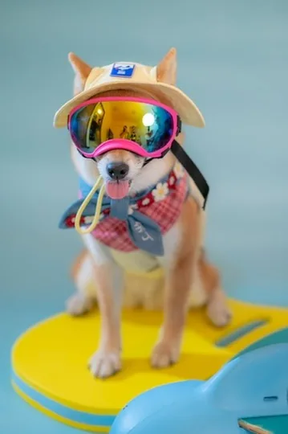

Joyforest 揪好森 × 小巴老師攝影
寵物聚會 × 小巴老師攝影｜棚拍、草地寫真與森林包場
寵物攝影優惠 NT$3,800 起｜拍完可午餐聚會、晚餐烤肉、唱歌或加購夜間體驗
不只是拍寵物照，也不只是辦聚會。Joyforest 揪好森結合攝影師小巴老師寵物攝影、室內棚拍、戶外草地實景與約 200 坪森林包場空間，讓毛孩可以先拍一組有質感的棚拍與草地寫真，拍完再接午餐或晚餐聚會、烤肉、唱歌，甚至安排夜間體驗，變成一趟完整的毛孩森林小旅行。
若你只想辦寵物聚會、不需要攝影，請改看寵物聚會主頁（純場地包場）。
專業攝影師拍攝
小巴老師 15 年全職攝影經驗，擅長自然互動、家庭寫真與動態引導。
棚拍＋戶外實景
可拍乾淨背景棚拍，也可拍草地、帳篷、森林系戶外照片。
約 200 坪包場空間
兩片草地、帳篷、戶外用餐空間，都能成為毛孩活動與拍照場景。
拍完接聚餐或夜間體驗
拍攝後可接午餐、晚餐、烤肉、唱歌；想慢慢玩，也可直接安排夜間體驗。
這裡不是拍完就離開的寵物攝影棚，而是可以把「寵物攝影、毛孩聚會、晚餐活動與夜間體驗」一起安排的森林包場空間。
攝影師介紹｜小巴老師
小巴老師為八威創意有限公司攝影師，擁有超過 15 年全職攝影經驗，長期拍攝商業攝影、親子寫真、旅拍、婚紗、空拍與活動紀錄。
過去合作廠商包含喜來登、華碩、八方雲集、姚元浩等品牌與商業案件。
同時也是台灣少數長期投入海外親子旅拍的攝影師，曾拍攝日本、韓國、新加坡、宿霧、峇里島、雪梨等地親子與家庭寫真，累積超過 50 趟海外旅拍經驗。
小巴老師擅長的不是制式擺拍，而是動態引導、邊玩邊拍、捕捉自然互動。這樣的拍攝方式很適合毛孩，因為寵物不一定會一直看鏡頭，但牠們會奔跑、撒嬌、靠近主人、被零食吸引、和家人互動。
我們拍的不是只有「寵物坐好的一張照片」，而是毛孩與家人之間真正有感情的畫面。
兩種拍攝風格一次擁有｜室內棚拍＋戶外草地實景

室內棚拍｜乾淨背景、專業燈光、正式寵物寫真
棚拍適合想要乾淨、明亮、背景單純的毛孩攝影。可使用背景紙、燈光與簡單道具，拍攝毛孩獨照、主人與毛孩合照、生日紀念照、寵物服裝照或形象照。
適合拍：
- 毛孩獨照、主人與毛孩合照
- 生日紀念照、寵物服裝照
- 貓咪或小型犬棚拍、乾淨背景形象照

戶外實景｜草地、森林、帳篷與自然光
Joyforest 揪好森本身就是森林系草地場地，戶外有草地、帳篷、自然光與森林背景，毛孩可以在真實環境裡活動，拍出更有生活感、旅行感與自然互動的照片。
適合拍：
- 毛孩草地奔跑照、主人牽著毛孩散步
- 帳篷旁合照、森林系家庭寵物寫真
- 毛孩生日派對紀錄、寵物聚會自然互動照
室內棚拍是乾淨精緻，戶外實景是自然有溫度。兩種風格可以在同一個場地完成，不需要另外移動。
約 200 坪森林草地，整個場地都是毛孩攝影棚
Joyforest 揪好森提供約 200 坪森林草地與帳篷空間，可作為寵物攝影、毛孩生日派對與寵物家庭聚會使用。這裡不是只有一個小角落可以拍照，而是把草地、帳篷、戶外用餐空間與室內休息區，都變成毛孩的一日攝影與派對場景。
場地包含：
- 兩片草地活動區、圓頂帳篷空間、森林系戶外背景
- 室內冷氣休息區、電視、卡拉 OK、戶外用餐空間
- 可自備餐食、可烤肉煮食、可包場聚會與活動
這是全台少見的大型場景式寵物攝影與毛孩派對體驗，讓毛孩同時擁有棚拍、草地、森林、帳篷與聚會空間。
純使用場地、不加攝影，也可參考寵物友善場地的聚會方案。
方案與價格
以下為參考方案，實際以預約時確認為準。
方案 A｜寵物攝影基礎方案
~~NT$5,800~~ NT$3,800 起
- 拍攝時間：40 分鐘
- 包含 2 隻寵物、2 位主人入鏡
- 可拍毛孩獨照、主人與毛孩合照
- 可拍室內棚拍、戶外草地實景
- 拍攝成功照片全給
- 至少 20 張以上調色照片
- 不包含精修；不提供 RAW 原始檔
40 分鐘會依毛孩狀況安排棚拍、主人合照與戶外實景；不需要很會看鏡頭，也能拍出自然有溫度的畫面。
加價說明
- 第 3 隻寵物起：NT$800／隻
- 第 3 位入鏡者起：NT$800／人
- 加拍寵物或入鏡人數時，會依實際組合延長拍攝時間，通常每增加一位或一隻，約增加 5–10 分鐘
- 單純陪同、不入鏡者不收費
- 超過 4 隻寵物或 4 位入鏡者，請改以客製報價
- 多人寵物聚會、毛孩生日派對或活動紀錄，依人數、毛孩數量與拍攝時間另外報價
調色與精修說明
基本調色包含：明暗、色溫、對比、整體色調統一、裁切與水平修正，讓照片自然、乾淨、有溫度。
精修不包含在基礎方案內。精修加購 NT$800／張起，可包含去除牽繩、背景雜物、毛髮細節、眼屎口水、主人膚況、特殊合成與複雜背景處理等，依照片難度調整。
推薦組合｜拍完可以留下來玩
拍完寵物攝影後，可以依需求接草地小聚、中型包場或夜間體驗。毛孩可以繼續在草地活動，大人可以用餐、烤肉、聊天、唱歌，不用拍完就立刻離開。
寵物攝影＋草地小聚
~~NT$10,800~~ NT$7,800 起
- 寵物攝影 40 分鐘
- 2 隻寵物＋2 位主人入鏡
- 棚拍＋戶外草地實景
- 至少 20 張以上調色照片
- 小型場地聚會使用
- 可自備餐食、烤肉、唱歌
最適合第一次預約的組合，拍完可以留下來吃飯、聊天、陪毛孩玩。
寵物攝影＋中型包場
~~NT$12,800~~ NT$9,800 起
- 寵物攝影與活動紀錄
- 棚拍＋戶外草地實景
- 毛孩獨照、主人合照、聚會紀錄
- 約 200 坪場地包場
- 適合毛孩生日派對、狗狗同好聚會
若希望完整紀錄活動流程、多人合照、生日儀式或派對互動，可依拍攝時間另外加購攝影服務。
攝影＋夜間體驗延伸
~~NT$5,800~~ NT$3,800 起
已預約夜間體驗的客人，可加購寵物攝影。適合想把棚拍、草地寫真、晚餐聚會與夜間體驗安排在同一天的家庭。
- 入住當天或隔天安排拍攝
- 棚拍或戶外實景擇一或搭配安排
- 至少 20 張以上調色照片
- 夜間體驗檔期依預約時確認
可預約時段
寵物攝影與包場聚會需依場地可開放時段預約，請先參考以下 A / B / C 三種安排方式。
| 時段 | 內容 | 適合 |
|---|---|---|
| A 時段 | 上午拍攝＋午餐聚會 | 單純攝影、午餐小聚、毛孩生日午餐 |
| B 時段 | 下午拍攝＋晚餐聚會 | 攝影＋晚餐、烤肉、唱歌、狗狗同好聚會 |
| C 時段 | 下午拍攝＋晚餐聚會＋夜間體驗 | 毛孩生日旅行、家庭寵物小旅行、想慢慢玩的客人 |
實際時間會依當日預約狀況確認；若只想拍照，也可以只預約攝影時段。
每週開放時段
| 日期 | 可預約時段 |
|---|---|
| 週一 | A / B / C |
| 週二 | A / B / C |
| 週三 | A / B / C |
| 週四 | A / B / C |
| 週五 | A / B / C |
| 週六 | A |
| 週日 | B / C |
平日 A / B / C 都可討論；週六只開放 A 時段；週日開放 B / C 時段。
連續假期開放時段
| 連假日期 | 可預約時段 |
|---|---|
| 連假第一天 | A |
| 連假中間日期 | 通常不開放單純活動 |
| 連假最後一天 | B / C |
如果是「寵物攝影＋夜間體驗」方案，可依活動日期另外討論安排。
建議流程
A｜上午拍攝＋午餐聚會
抵達 → 毛孩適應 → 棚拍／戶外拍攝 → 午餐小聚 → 整理離場
B｜下午拍攝＋晚餐聚會
下午抵達 → 棚拍／戶外拍攝 → 晚餐、烤肉、唱歌 → 依約定時間離場
C｜下午拍攝＋晚餐＋夜間體驗
下午抵達 → 寵物攝影 → 晚餐聚會 → 夜間體驗 → 延長空間使用
寵物攝影作品集｜棚拍、草地與毛孩派對
以下為小巴老師寵物攝影與 Joyforest 揪好森場地作品，包含室內棚拍、戶外草地、主人合照與毛孩派對等風格。縮圖網格可點開放大，支援左右切換與 ESC 關閉。
常見問題
這是單純租場地拍照嗎？
不是。這是 Joyforest 揪好森與攝影師小巴老師合作的完整寵物攝影與毛孩派對方案，包含攝影服務、指定場景使用，並可依方案加購聚會或夜間體驗。
A / B / C 時段是什麼意思？
A 是上午拍攝＋午餐聚會；B 是下午拍攝＋晚餐聚會；C 是下午拍攝＋晚餐聚會＋夜間體驗。平日 A / B / C 都可討論，週六只開放 A，週日開放 B / C，連假則以第一天 A、最後一天 B / C 為主。
寵物攝影基礎方案包含幾隻寵物？
基礎方案 NT$3,800 起，包含 2 隻寵物與 2 位主人入鏡，拍攝 40 分鐘。
可以加寵物或加人嗎？
可以。第 3 隻寵物起 NT$800／隻，第 3 位入鏡者起 NT$800／人，通常每增加一位或一隻約增加 5–10 分鐘拍攝時間。
照片會怎麼交付？有精修嗎？
拍攝成功照片全給，至少 20 張以上調色照片，雲端交付。基礎方案含調色不含精修；精修 NT$800／張起。
只想辦聚會、不要攝影呢？
請回毛孩派對主頁查看純場地方案。
預約寵物攝影
請用 LINE 告知希望日期、人數、毛孩數量、想拍棚拍或戶外、是否加購聚會或夜間體驗，我們會協助確認攝影師與場地檔期。
Line 官方連結亦見於全站浮動按鈕；預約模板：前往預約頁